← 返回阅读库 · 原论文目录
论文讲解阅读文档 · 新模型 · v056
DeiT Data-efficient Image Transformers[2012.12877]
视频时长 00:09:48；讲解文字 5,012 字符；提取讲解画面 27 张。按视频原顺序阅读，每段文字保留时间戳。
文字来自整段视频的自动语音转写，按自然停顿分段，并与 PPT / 论文页面 / 演示画面对齐。未将讲解压缩为摘要；术语、数字和口述公式请结合画面及原论文核对。 阅读稿已校正规范部分明确术语误识别；原始逐字稿和每处修改记录另行保留。
讲解画面为源视频截图（640×360），不是可编辑 PPT 文件。全片按每秒 2 帧扫描内容变化，逐步展开页保留；连续动画保留代表画面。清晰度受源视频限制。
下载完整资料包 · 含离线 HTML、PDF、Word、全部 PPT 画面和字幕。
原论文与材料
Training data-efficient image transformers & distillation through attention · 下载完整 PDF（22 页）
按时间阅读
00:00:00–00:00:27 · 画面 001
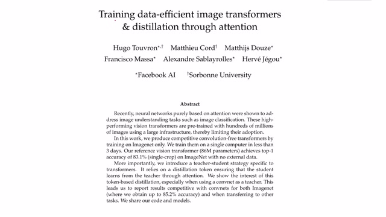
00:00:00–00:00:27 · 画面 001大家好,今天我们来介绍 Training Data-Efficient Image Transformers and Distillation Through Attention 那么这篇论文和我们之前介绍的 Vision Transformer 一样是非常经典的使用 Transformer 来解决图像识别问题的一篇论文但是相距于之前的 Vision Transformer,本文更强调了 Data-Efficient 也就是使用相对较少的样本甚至相对较少的参数量来训练,能达到一个好的性能
那么在今天视频中我们还是会首先介绍本文的 Intuition，主要就是 Vision Transformer 它的一些痛点，随后介绍本文的核心思路 Distillation，就是我使用一个存在的已经训练好的网络来教我们的这个 Transformer，希望这个 Transformer 得到比原来的网络性能更好的结果，那么随后我们从实验结果还有作者做的玻璃实验可以看到
00:00:27–00:01:07 · 画面 002
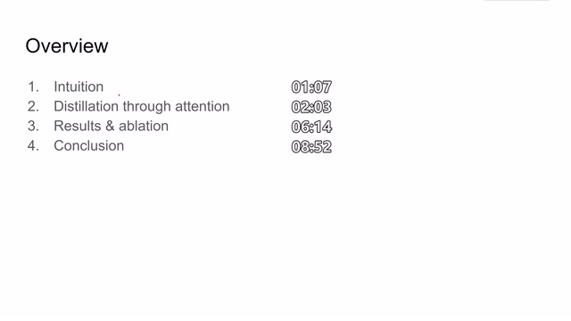
00:00:27–00:01:07 · 画面 002本文提出的方法确实能够帮助 Transformer Network 从其他模型学习到他们已经训练好的知识，并且最后本文的方法，本文的 model 会 outperform 原来学习的模型，那么最后是本文得到一些结论，好的，下面来看本文的 intuition，我们在之前的视频中已经介绍了 Vision Transformer，那么如果有不熟悉的朋友还是非常建议去看之前的视频
00:01:07–00:02:00 · 画面 003
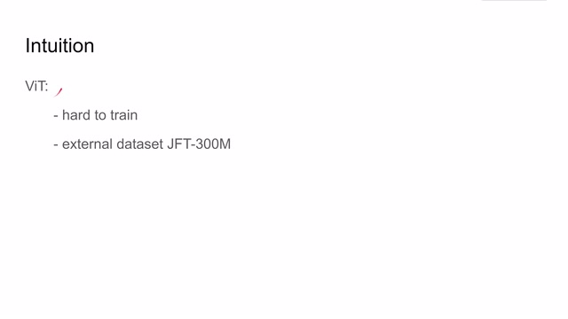
00:01:07–00:02:00 · 画面 003那么原来的 Vision Transformer 它有几个很大的问题，第一个就是因为 Transformer 它这个模型本来就是很 generalize 的，很泛化的，相比于 Convolutional Neural Network 它没有这些 inductive bias，也就是对这个数据的先验的知识，所以训练这样的 Transformer 是往往比较困难的，而且我们看到这个网络的结构都很庞大，同时在 Vision Transformer 里面它用的是 JFT 300 million
这个数据集，那么这个数据集呢是谷歌私有的数据集，然后谁也不知道说这个数据集里面包含了哪些图像，是不是就把这个 ImageNet 给它覆盖住了，同时呢也意味着读者不能复现作者的内容，因此呢本文就是为了克服这些问题，那么为了克服这些问题呢，本文就想到了我能不能从现有的一个网络中提取出他学习到的东西用来训练本文提出的网络
00:02:00–00:02:02 · 画面 004
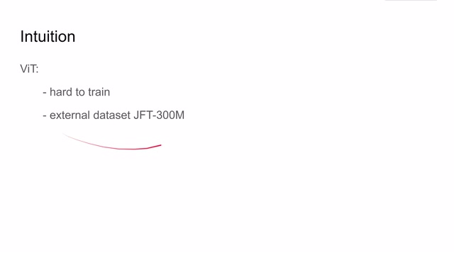
00:02:00–00:02:02 · 画面 00400:02:02–00:02:03 · 画面 005
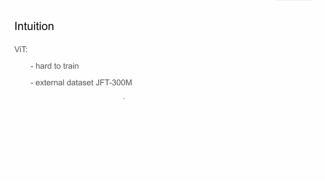
00:02:02–00:02:03 · 画面 00500:02:03–00:04:03 · 画面 006
00:02:03–00:04:03 · 画面 006那么因为我们之前的网络已经训练好了，所以说呢可以很快速大量的为我们的新网络提供 labels，那么这里呢从原来的网络学习知识的过程呢其实就是 network distillation，网络的蒸馏，那么我们现在训练的网络呢称之为 student model，那么学习的网络呢称之为 teacher model，那么这里呢作者提出了两种 distillation 的方法，其实就是 loss function，首先看这个 soft distillation这里的 Y 是我们数据集中已经有的数据,ground truth。那我们在这里对 student model 输出做一个 softmax,然后再做 cross entropy。这就是一个标准的 image classification 的 loss。
那么此外呢，为了让我们的 student network 向 teacher network 学习嘛，我们就要使得 student network 的 output 的 distribution 和 teacher network 他们两个的输出的 distribution 尽量接近，那么还是如何衡量两个 distribution 之间的距离呢，我们熟悉的 kl divergence，这里呢 softmax 之后把两个 distribution 放到一个 kl divergence 里面来对比一下，这样子呢就使得 student model 能够学习到 teacher model 中的内容
那么注意呢这里有一个套这个套呢被称为 distillation temperature，就是蒸馏的温度，我们可以看到它呢其实就是控制了整个这个蒸馏的速度或者说是强度，那么这里呢还有一个 lambda，这个 lambda 呢就是控制这个 cross entropy 和 KL divergence 它们两个之间的 tradeoff，那么这个式子呢就是 soft distillation，那么除此之外呢，作者还提出了一种更简单更暴力的 hard label distillation，也就是说作者认为 teacher network
他输出的 label 就是我们的 ground truth 那么这样子呢我们直接使用 cross entropy 就直接把这个问题当成传统的这个 classification 的问题来训练了那么我们既然能把 teacher model 的 label 作为 true label 作为 ground truth 那么我们能不能把 ground truth 也变成形如 teacher model 输出的这个 distribution 呢那当然也是可行的这里呢做人使用了这个 label smoothing
00:04:03–00:04:46 · 画面 007
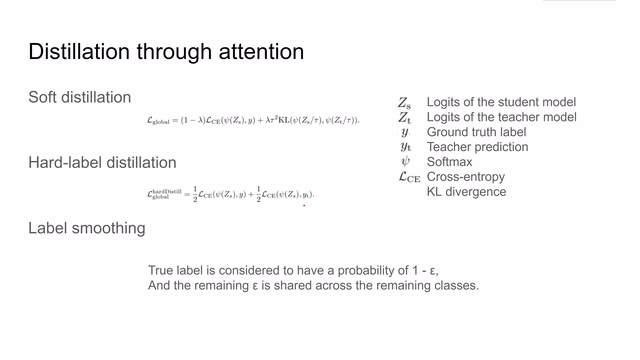
00:04:03–00:04:46 · 画面 007Label Smoothing 就是我们把这一个 TrueLabel 也变成一个 Distribution 那么这个 Distribution 中有 1-y 的概率还是原来的那个 Label 那么剩下的 y 的概率被平均分配到 k 个也就是有多少个类别那就平均分配到其他的类别当中那么这样子就把一个 TrueLabel 也变成了一个 Distribution 那么也就是说我们的 HardLabelDistribution 也可以变成 SoftLabelDistribution
00:04:46–00:04:47 · 画面 008
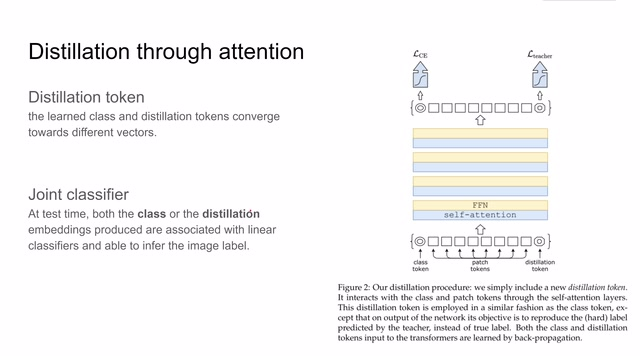
00:04:46–00:04:47 · 画面 008那么介绍完这些 distillation 的 loss 之后我们应该怎么样去应用这些 loss 呢假如说我们直接想原来的 vision transformer 一样只用一个 class token 然后最后把这 class token 的 representation 解出来放一个 classifier 里面再拿那个 label 来训练这样相当于原来的 vision transformer 呢我们的新网络在训练的过程中它使用的 label 反而是 noisy 的是有很多可能是有很多可能包含错误的 teacher model 来产生的那么肯定的 garbage in garbage out
00:04:47–00:04:52 · 画面 009
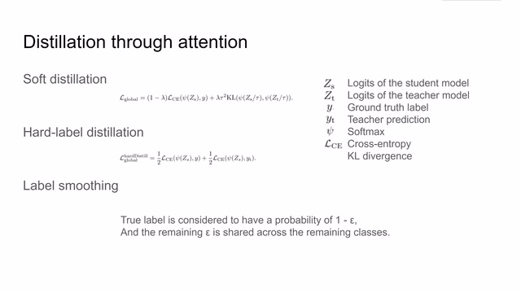
00:04:47–00:04:52 · 画面 00900:04:52–00:06:14 · 画面 010
00:04:52–00:06:14 · 画面 010那么使用原来的网络结构肯定是不能得到一个好的结果的那么为了克服这一点作者这里提出了 distillation token 也就是说在我们一开始做 patch embedding 的时候我说变成 patch tokens 的时候在最后加一个 distillation token 那么这个 token 所对应的 representation 它用来接收 teacher network teacher model 它产生的那些 label 那么这两个 token 出来的 representation 呢
一个分别用来和 ground truth label 做对比一个呢就是用来和 teacher 的 label 做对比那么最后呢相对于原来的 transformer 我们其实有了两个 token 都可以用来做 classification 那么我们应该使用哪一个 token 呢小孩子才做选择成年人都是我都要作者是同时使用了 class token 和 distillation token 这两个 token 一起来做的 classifier 来 infer 测试集中图像的 label
那么以上呢就是本文提出的核心贡献那么下面来看看结果首先是传统异能当我们有了一个新的 block 之后我们肯定要试试不同尺度的 model 它的性能这里呢作者提出了三种不同尺度的模型那么来看在 ImageNet 上的表现左边呢是我们使用了不同的 teacher 这边呢是 teacher 的表现那么这边呢是我们的 student 的 model 它的表现那么可以看到在 pre-train 之后本文的 student network 已经是 outperform teacher network 了
00:06:14–00:07:23 · 画面 011
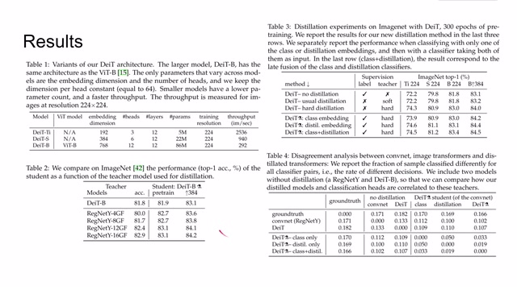
00:06:14–00:07:23 · 画面 011那么在此基础上，我们使用更大的图像对我们的 student network 进行 fine-tune，那么可以看到性能有了进一步的提升。那么再看右上角这个表格，它向我们证明了 distillation 首先是管用的，如果我们使用 distillation token，会使这个性能更进一步。当我们使用 class embedding 和 distillation embedding 一起来做这个 test 的时候，那么它得到的效果是最好的。
那么除此之外呢，作者还汇报了一个有意思的实验，也就是 student model 和 teacher model 他们之间学习到的东西相差多少呢。这里呢，作者对比了这个 ground truth convolutional neural network 里面的数值呢，就是每一行的网络跟每一列的网络他们预测结果不同的样本在整个样本中的比例。那么可以看到呢，使用 class token 和这个 distillation token。
00:07:23–00:07:24 · 画面 012
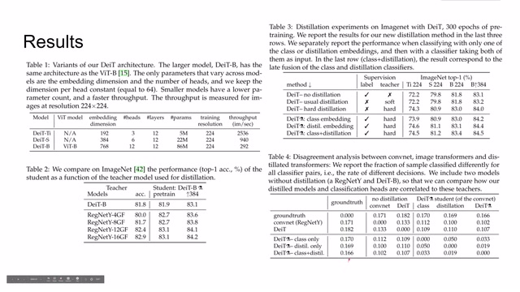
00:07:23–00:07:24 · 画面 01200:07:24–00:07:40 · 画面 013
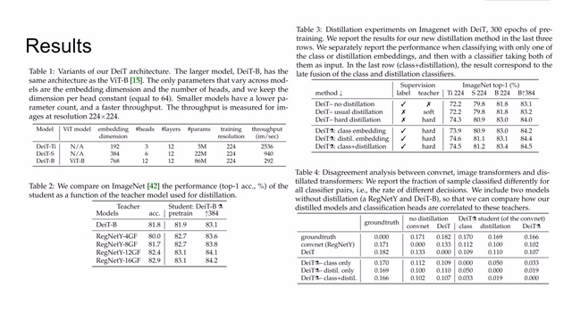
00:07:24–00:07:40 · 画面 013我们训练到这个 student model 和传统的 convolutional model 和没有 distillation 的 model 它们的差值都相似，所以我们可以不那么严谨的认为，通过使用 class token 和 distillation token 我们学到的网络处在 convolutional neural network 和没有 distillation 的 transformer 之间，也就是我们学出来的 student network student model 和之前的 teacher model 都不一样。
00:07:40–00:07:44 · 画面 014
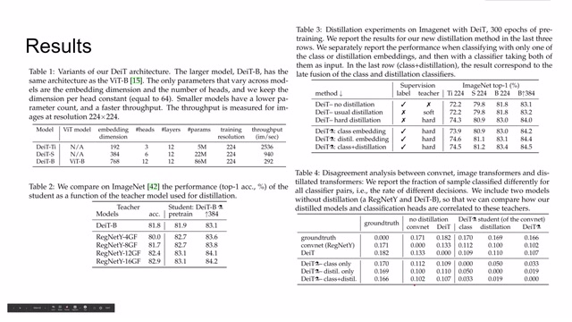
00:07:40–00:07:44 · 画面 01400:07:44–00:07:46 · 画面 015
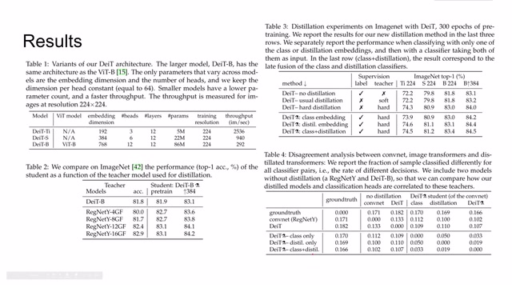
00:07:44–00:07:46 · 画面 01500:07:46–00:07:49 · 画面 016
00:07:46–00:07:49 · 画面 01600:07:49–00:07:53 · 画面 017
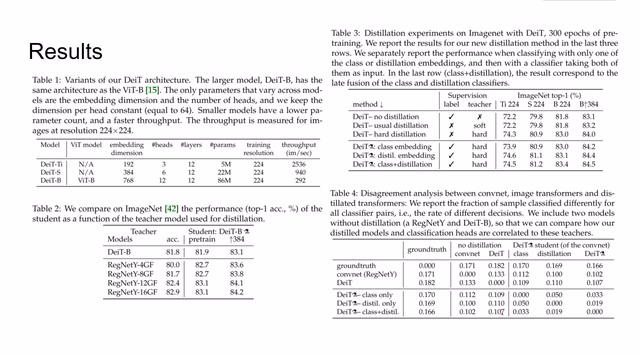
00:07:49–00:07:53 · 画面 01700:07:53–00:07:57 · 画面 018
00:07:53–00:07:57 · 画面 01800:07:57–00:08:01 · 画面 019
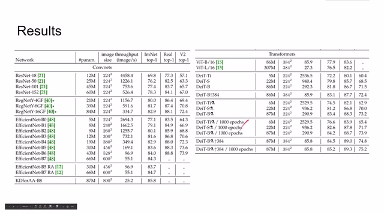
00:07:57–00:08:01 · 画面 019那么这个表也是汇报了本文提出的模型和其他的一些 convolutional based 还有 transformer based 这些模型它们性能的表现的差异。那么除此之外，我们还发现训练的时间的长度这个 epochs 对这个 distillation model 还是有很大的影响。那么随着训练次数的增加，一般的 distillation 可能就已经 overfit 了，但是通过使用 distillation token，本文的模型的性能还在逐渐的提升。
00:08:01–00:08:02 · 画面 020
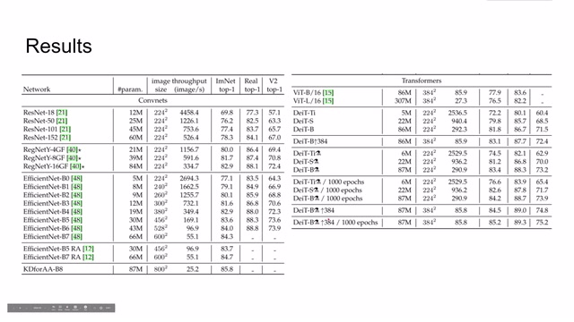
00:08:01–00:08:02 · 画面 02000:08:02–00:08:08 · 画面 021
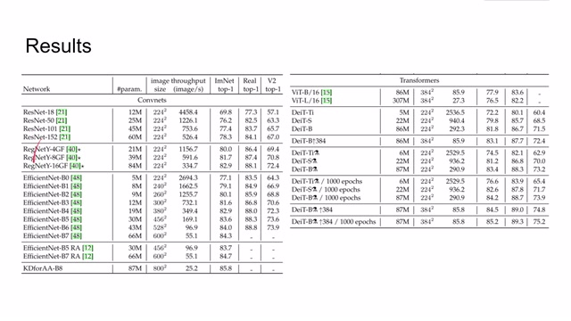
00:08:02–00:08:08 · 画面 02100:08:08–00:08:32 · 画面 022
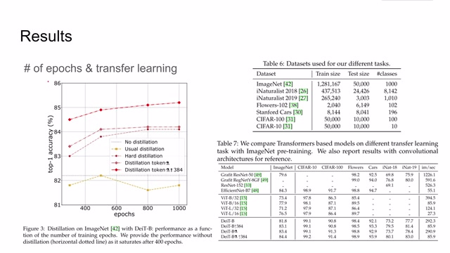
00:08:08–00:08:32 · 画面 022那么右边呢，同样这里作者也测试了 transfer learning 的相关的一些表现，他们性能呢，在这里那么肯定本文提出的方法是 outperform 之前的一些方法的。那么在此基础之上呢，作者还对 optimizerdata augmentation 还有 regularization 这些这些不同的项目进行了剥离实验，那么最后的结果呢，就是汇总出这样一张表格。
00:08:32–00:08:33 · 画面 023
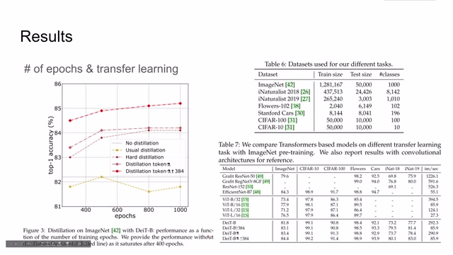
00:08:32–00:08:33 · 画面 02300:08:33–00:08:39 · 画面 024
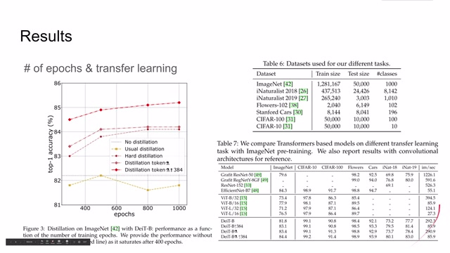
00:08:33–00:08:39 · 画面 02400:08:39–00:08:52 · 画面 025
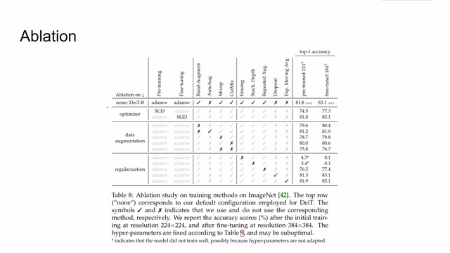
00:08:39–00:08:52 · 画面 02500:08:52–00:09:48 · 画面 026
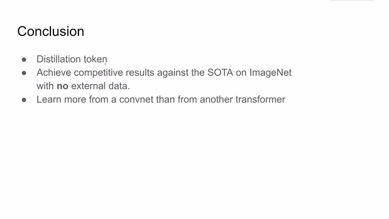
00:08:52–00:09:48 · 画面 026那么来到结论,本文通过在 Vision Transformer 中增加 Distillation Token,来使得 Student Network 能够达到 State of Art 的水平,同时在训练的过程中并没有使用外部的数据集,这里就疯狂暗示 Vision Transformer,对吧?然后自此还发现,本文提出的网络可以在原来 CNN 的网络中学习到更多的东西,那么即便是有一个性能与 CNN 相近的 Transformer 的 Network,我们的 student model 依然还是学习 CNN 之后，它的表现会更好。那么未来作者也在计划研究更多针对于 transformer 的 data augmentation 的策略来帮助提升 transformer 的性能。那么总的来说，这篇论文的核心思想并不是非常难理解，然后实验也是非常的充分，这里也是非常推荐感兴趣的朋友去读一下原文。以上就是我对这篇论文的简单的分析，感谢您的收看，再见。
00:09:48–00:09:48 · 画面 027
00:09:48–00:09:48 · 画面 027转写与来源说明 · 0 个自动复核提示
保留 22 个原始语音片段，0 个片段触发自动复核提示。提示仅用于定位可能的术语、重复或识别问题，不等于已确认错误。
讲解画面为源视频截图（640×360），不是可编辑 PPT 文件。全片按每秒 2 帧扫描内容变化，逐步展开页保留；连续动画保留代表画面。清晰度受源视频限制。
原视频：paper/合集_2026-10-16_新模型/[论文简析]DeiT Data-efficient Image Transformers[2012.12877].mp4
SHA-256：3a2a963053d50bcda79dc9ca68ed581bb5796c981e3eee74f80bbd980e85e43f
全文按视频语音与画面制作。原论文可从上方链接下载；完整资料包保留全文、原始逐字稿、字幕和校对记录。